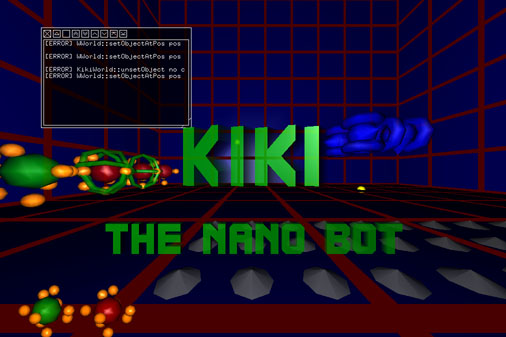
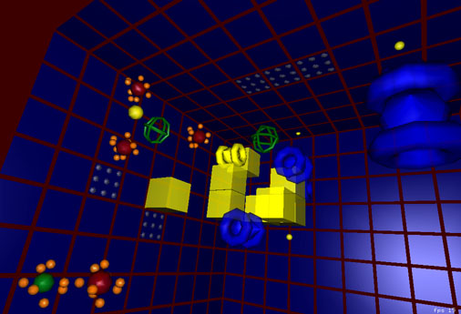
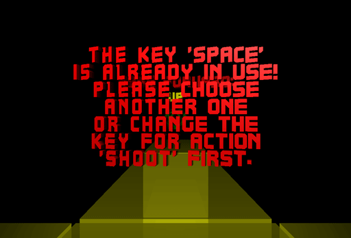
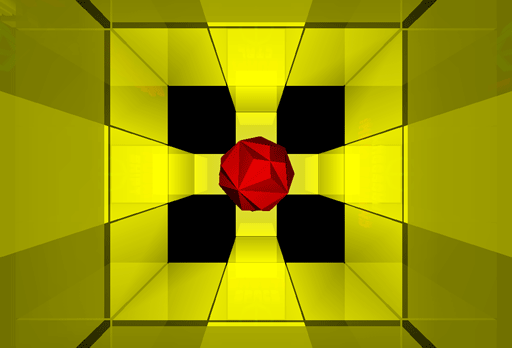
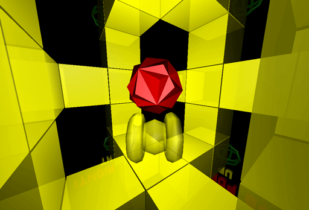
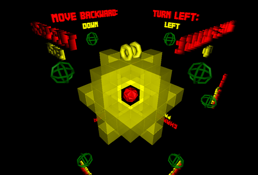

|
This page contains the first published screenshots of kiki.  I am reusing the framework I wrote for kodisein, as one may recognize from the console window and the design of this page (just to begin with some cross-selling :-)  When I started programming I had a mixture of Sokoban and Kula-World in mind. But because I would have no fun solving my own puzzles, I added some Quake-features as well :-)
The main setup 'menu'. Instead of writing a menu interface for the setup, I decided to reuse the game items and build a special setup 'level'.
Part of the keyboard setup...  ... and the message you will get if you try to bind an already used key. Simply setting the key of the other action to 'undefined' doesn't work since using the setup menu itself depends on the keys it defines. You will understand what I mean if you play the game, for now I show this screen only because I am fond of my hand made 3D font ;-)
The 'IDE' of the game. Instead of writing a full-featured level editor, I decided to integrate
python. Lacking a nice editor for python code, I hacked one together in
a few days, which would have been impossible without python. The
syntax coloring is a little bit slow, but it's cool to program the
game without leaving it!  I love symmetries. When I saw this image, I thought it's beautiful enough to be shown on this page, despite it's lack of information :-)  This one is a little bit more informative. The red 'dot' is the exit of the keyboard setup.  The complete keyboard setup. Looks complicated, but I planned to do a puzzle game, so why not start with the setup :-?
The main setup menu again.
The main setup menu upside down. I admit, it get's boring, I will add some in-game screentshots the next time. That's all for now. If interested, check back end of September
(or later ;-) for a preview. |
||
|
|
||